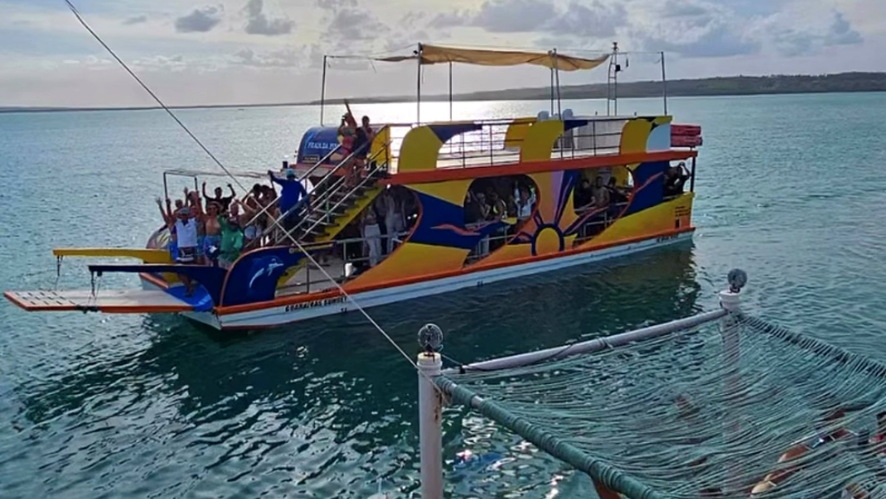
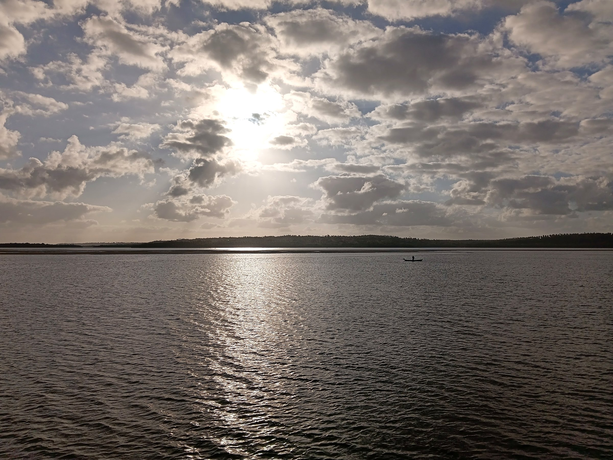
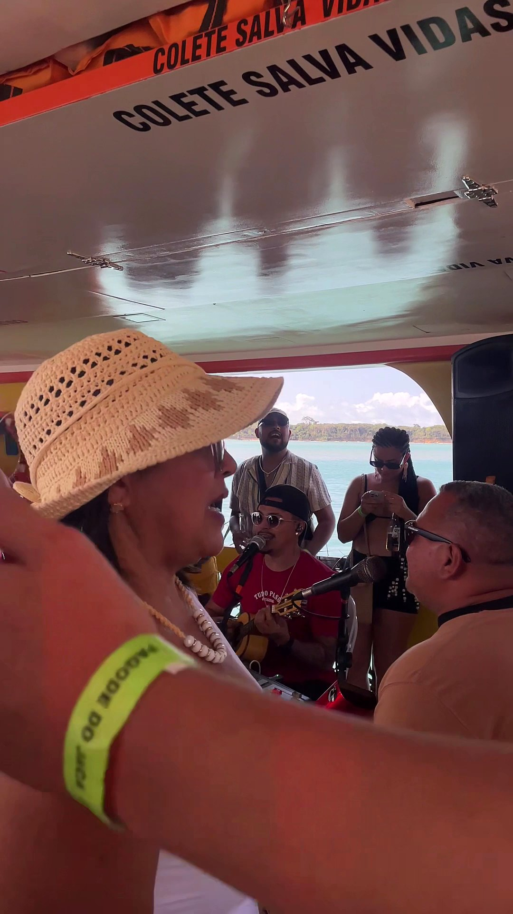
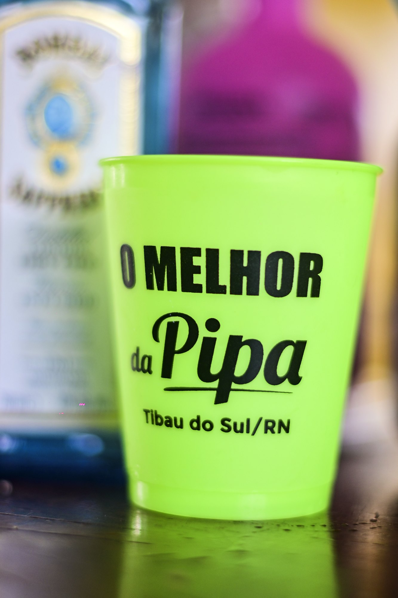
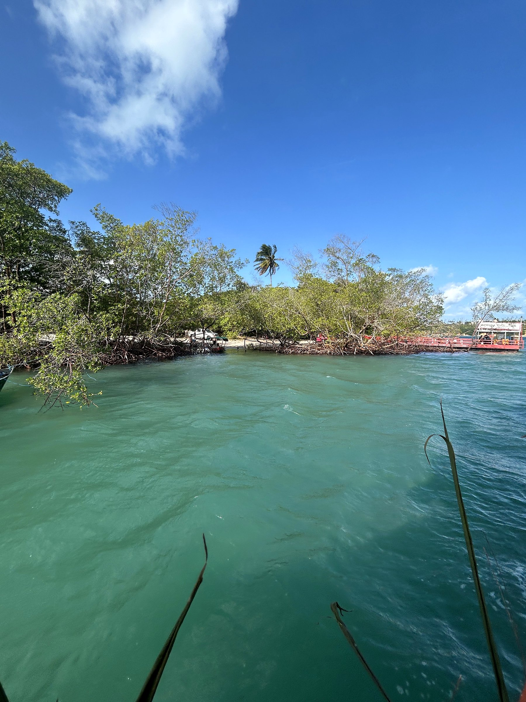
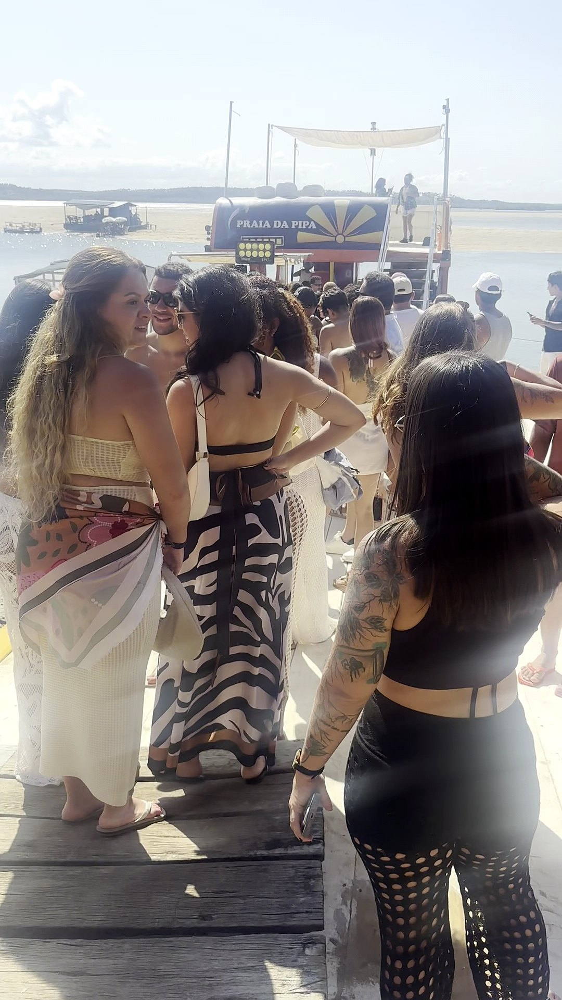
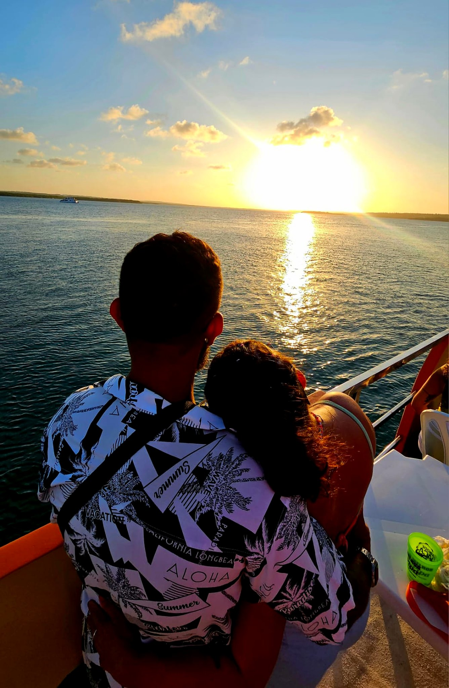
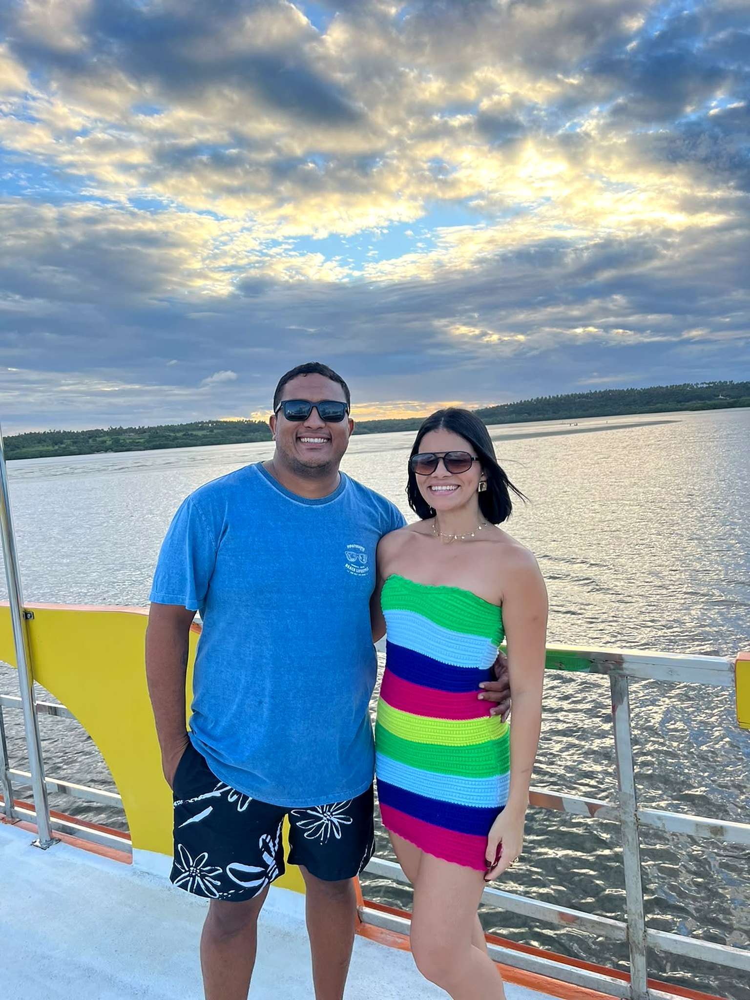
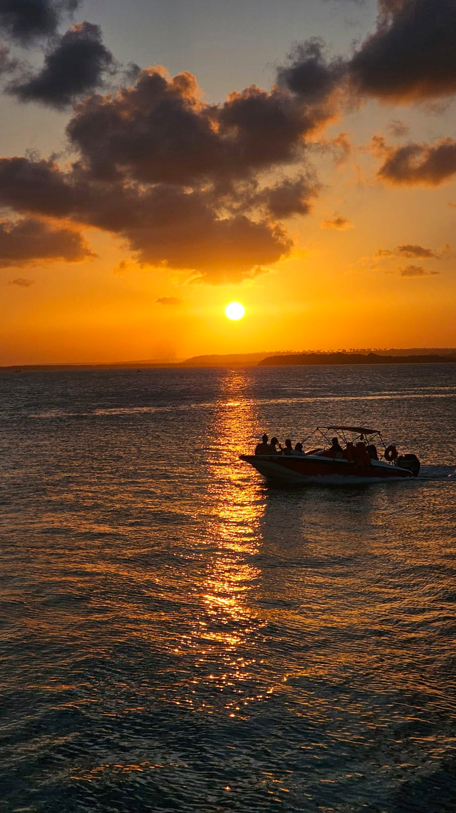

★★★★★
“Disparado um dos melhores rolês de Pipa e olhe lá se não o MELHOR! Galera massa, acolhedora, divertida e a vibe do barco ajuda muito as pessoas se conectarem.”

Roda de pagode ao vivo, banho na Lagoa de Guaraíras e pôr do sol no catamarã de 2 andares.
Embarque organizado na Lagoa de Guaraíras (Tibau do Sul / Pipa), pulseira oficial, bar a bordo e a energia que conecta todo mundo no barco.
Imagens reais das edições do Pagode do Jaca navegando por Tibau do Sul.



Águas calmas sem balanço de mar aberto, perfeitas para brindar, cantar e mergulhar.



“Disparado um dos melhores rolês de Pipa e olhe lá se não o MELHOR! Galera massa, acolhedora, divertida e a vibe do barco ajuda muito as pessoas se conectarem.”
“Desde a recepção com organização e equipe sincronizando a entrada para o barco, bar e caixa até a condução do passeio inteiro: pagode de qualidade com uma vista incrível!”
“Experiência única! Pagode, cerveja gelada e muita gente bonita. Recomendo demais.”
“O melhor pagode de Pipa, vai sem medo de ser feliz. Atendimento muito bom, pessoal super atencioso.”
Selecione seu formato, número de pessoas e chame o Herbert Maciel direto no WhatsApp.

O embarque acontece na Rua Mangue Seco, às margens da Lagoa de Guaraíras em Tibau do Sul - RN, a poucos minutos do centro da Praia da Pipa.
Não! Navegamos nas águas abrigadas e tranquilas da Lagoa de Guaraíras, em um catamarã largo de 2 andares super estável.
Sim. Contamos com serviço de bar completo a bordo com cerveja bem gelada, drinks, refrigerante e água durante todo o passeio.
Basta escolher a quantidade de pessoas no simulador acima e chamar o Herbert Maciel no WhatsApp (84) 99428-5903 para garantir sua vaga.
